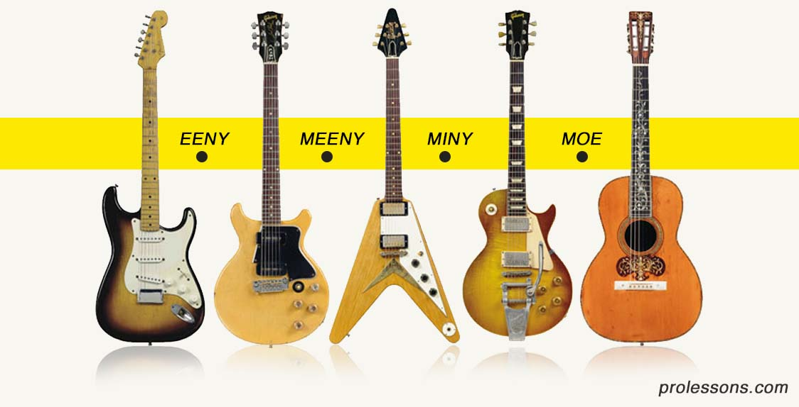
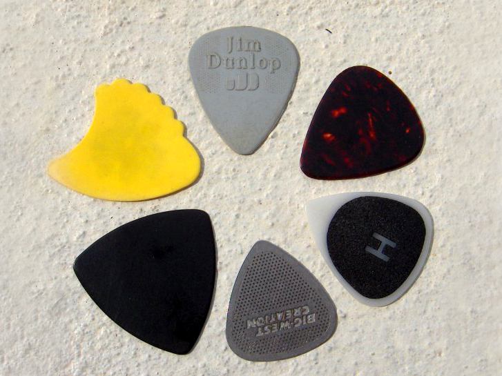

Guitars - are great. They can be acoustic, electronic - can produce peaceful sounds, as well as full metal...

Begginers often need to use "picks" (image below) since playing the guitar with only their fingers might be too challenging for newcomers.

*The thing about picks is, there are many kinds. Bigger, smaller, and all of them feel and sonud diffrent.